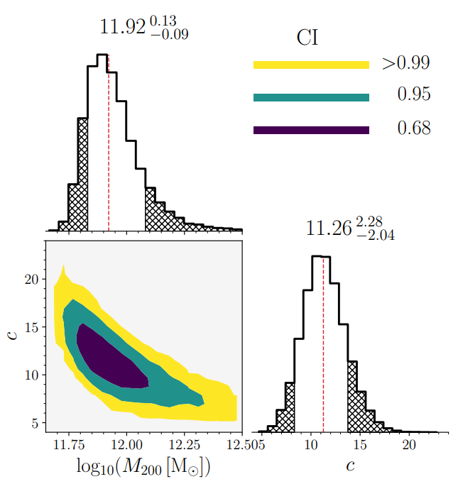
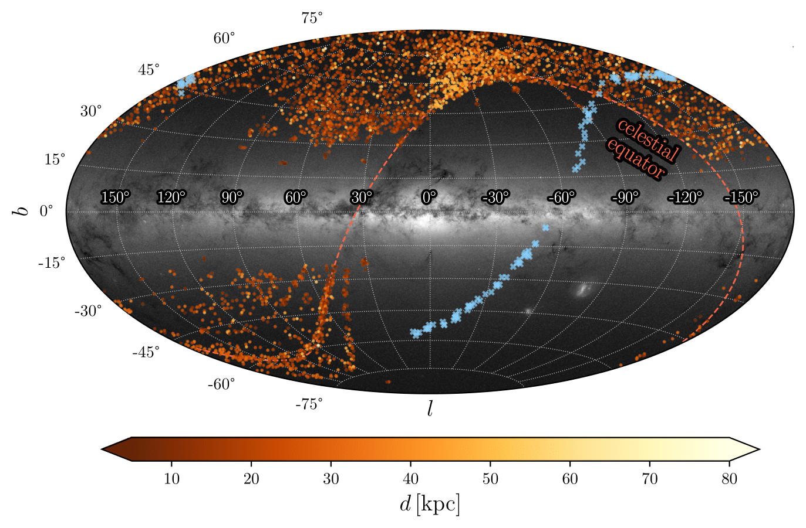

Welcome!
My name is Zdenek Prudil and I am a postdoctoral researcher at the Astronomisches Rechen-Institut in Heidelberg, Germany. I am a member of Dr. Andreas Koch's group. My research is focused on the Galactic archeology using the stellar tracers to map the spatial, dynamical, and chemical structure of the Milky Way and its neighborhood. I am also interested in studies of stellar evolution and pulsations.
Below you can find my latest research projects:
Milky Way archaeology using RR Lyrae and type II Cepheids II. High velocity RR Lyrae stars, and mass of the Milky Way
 In the second paper of the series, we found a handful of RR Lyrae stars that exhibit extreme velocities exceeding the local escape velocity. We estimate escape velocities in three distance bins using our dataset with calculated Galactocentric velocities and radii. Through a theoretical model of the Milky Way potential and estimated escape velocities, we derived the mass of the Milky Way equal to 1.26 × 1012 MSolar .
Milky Way archaeology using RR Lyrae and type II Cepheids. I. The Orphan stream in 7D using RR Lyrae stars
 The first paper of the series focused on stellar structures in the Milky Way halo focuses on one of the largest Milky Way stellar streams the "Orphan" stream. In this study, we employed a probabilistic approach to identify members of the Orphan stream based on their kinematical and spatial properties. We discuss possible progenitors for the Orphan stream and we ruled out Grus II as a potential source of the Orphan stream.
For my complete publication record please follow the link below::
Here